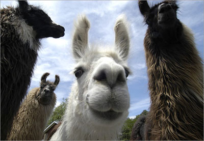

The following characteristics apply especially to llamas. Dentition of adults:-incisors 1/3 canines 1/1, premolars 2/2, molars 3/2; total 32. In the upper jaw there is a compressed, sharp, pointed laniariform incisor near the hinder edge of the premaxilla, followed in the male at least by a moderate-sized, pointed, curved spank canine in the anterior part of the maxilla. The isolated canine-like premolar which follows in the camels is not present. The teeth of the molar series which are in contact with each other consist of two very small premolars (the first almost rudimentary) and three broad molars, constructed generally like those of Camelus. In the lower jaw, the three incisors are long, spatulate, and procumbent; the outer ones are the smallest. Next to these is a curved, suberect canine, followed after an interval by an isolated minute and often deciduous simple conical premolar; then a contiguous series of one premolar and three molars, which differ from those of Camelus in having a small accessory column at the anterior outer edge.
Names of llama body parts: 1 Ears - 2 Poll - 3 Withers - 4 Back - 5 Hip - 6 Croup - 7 Base of tail - 8 Tail - 9 Buttock - 10 Hock - 11 Metatarsal gland - 12 Heel - 13 Cannon bone - 14 Gaskin - 15 Stifle joint - 16 Flank - 17 Barrel - 18 Elbow - 19 Pastern - 20 Fetlcok - 21 Knee - 22 Chest - 23 Point of shoulder - 24 Shoulder - 25 Throat - 26 cheek or jowl - 27 Muzzle
The skull generally resembles that of Camelus, the relatively larger brain-cavity and orbits and less developed cranial ridges being due to its smaller size. The nasal bones are shorter and broader, and are joined by the premaxilla.
Vertebrae:
- cervical 7
- dorsal 12
- lumbar 7
- sacral 4
- caudal 15 to 20
The ears are rather long and slightly curved inward, characteristically known as "banana" shaped. There is no dorsal hump. Feet are narrow, the toes being more separated than in the camels, each having a distinct plantar pad. The tail is short, and fibre is long, woolly and soft.
In essential structural characteristics, as well as in general appearance and habits, all the animals of this genus very closely resemble each other, so that whether they should be considered as belonging to one, two, or more species is a matter of controversy among naturalists.
The question is complicated by the circumstance of the great majority of individuals which have come under observation being either in a completely or partially domesticated state. Many are also descended from ancestors which have previously been domesticated; a state which tends to produce a certain amount of variation from the original type. The four forms commonly distinguished by the inhabitants of South America are recognized as distinct species, though with difficulties in defining their distinctive characteristics.
These are:
the llama, Lama glama (Linnaeus);
the alpaca, Vicugna pacos (Linnaeus);
the guanaco (from the Quechua "huanaco"), Lama guanicoe (Müller); and
the vicuña, Vicugna vicugna (Molina)
The llama and alpaca are only known in the domestic state, and are variable in size and of many colors, being often white, brown, or piebald. Some are grey or black. The guanaco and vicuña are wild, the former being endangered, and of a nearly uniform light-brown color, passing into white below. They certainly differ from each other, the vicuña being smaller, more slender in its proportions, and having a shorter head than the guanaco. The vicuña lives in herds on the bleak and elevated parts of the mountain range bordering the region of perpetual snow, amidst rocks and precipices, occurring in various suitable localities throughout Peru, in the southern part of Ecuador, and as far south as the middle of Bolivia. Its manners very much resemble those of the chamois of the European Alps; it is as vigilant, wild, and timid. The fiber is extremely delicate and soft, and highly valued for the purposes of weaving, but the quantity which each animal produces is minimal. Alpaca are descended from a wild vicuna ancestor while the domesticated llama is descended from a wild guanaco ancestor, though at this point there has been a considerable amount of hybridization between the two species.
Differentiating characteristics between llamas and alpacas include the llama's larger size and longer head. Alpaca fiber is generally more expensive but not always more valuable. Alpacas tend to have a more consistent color throughout the body. The most apparent visual difference between llamas and camels is that camels have a hump or humps and llamas do not.
Commonly unknown, llamas do not have eyelashes. However, their cousin the alpaca does.